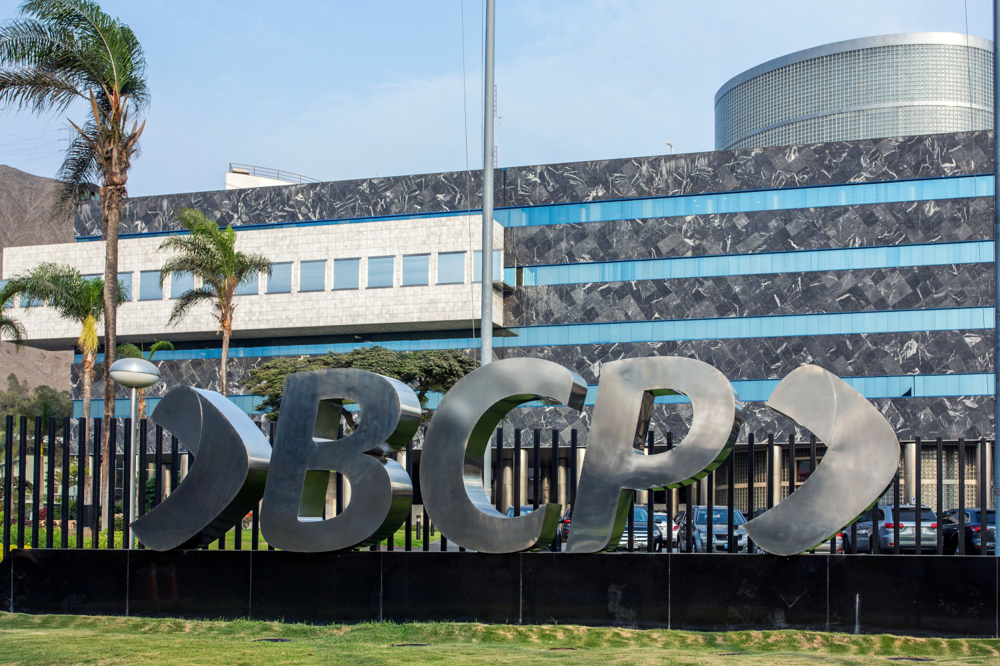

I've had the privilege to work and study at prestigious institutions. Below I show my professional experience and academics:

Banco de Crédito BCP
Wholesale Banking, Internal Consulting & Operations
IFC - World Bank Group
Global Trade Finance & Operations

Georgetown University
Pursued my MBA to develop leadership and business skills